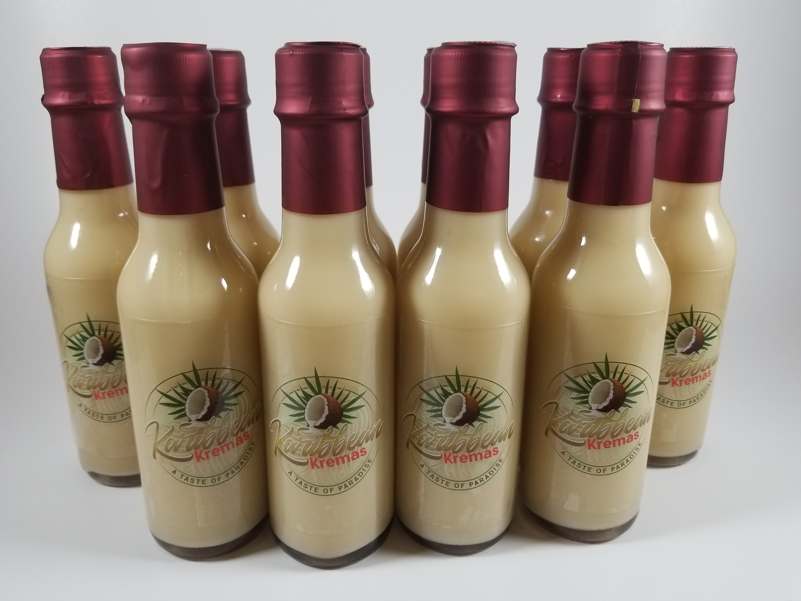

Betnovate 1mg/g kremas tūbelė 15g - Vaistai.lt
 Prekė įtraukta į sąrašą Prekė pašalinta iš sąrašo PRADŽIA KOSMETIKA OPTIKA REABILITACIJA STRAIPSNIAI INFORMACIJA AKCIJOS VAISTINĖS COVID-19 ▲ 1.61% Papildai Akims Alaus mielės Antioksidantai Bičių produktai Diabetikams Endokrininei sistemai Energijai Folio rūgštis Geležies preparatai Gliukozė Imunitetui Jodo preparatai Kalcio preparatai Kepenims Kojų venoms Magnio preparatai Moterims Nakvišų aliejus Nervų sistemai Odai, plaukams, nagams Organizmo ph reguliavimui Organizmo valymui Osteoporozei Paaugliams Padidintam fiziniam krūviui Pastilės, žirneliai, ledinukai Peršalimas Probiotikai Sąnariams Skysčių kontrolei Smegenų veiklai Svorio kontrolei Širdžiai Šlapimo sistemai Vaikams Virškinimui Vitamino A preparatai Vitamino C preparatai Vitamino D preparatai Vitaminai ir mineralai Vyrams Vyresniems Žiedadulkės, medus ir kiti bičių produktai Žuvų taukai Dezinfekcija Išoriniam naudojimui Paviršiams Negalavimai Akių negalavimai Alergija Ausų skausmas Burnos ertmės ligos Diagnostikos testai Galvos skausmas Gerklės skausmas Kosulys Nudegimai, žaizdos Pagirių sindromas PMS Sąnarių skausmai Skausmas Sloga Sudirgusi oda Sumušimai Nervų sistemos negalavimai Širdies negalavimai Šlapinimosi sutrikimai Virškinamojo trakto negalavimai Pūslelinė Rudeniui Akių negalavimai Alergija Apsauginės kaukės Imuniteto stiprinimui Kimėlinei ligai gydyti Kojų venoms Kūdikių ir vaikų sveikatai Moterims Nuo viduriavimo Nuovargis Osteoporozei Priemonės žaizdoms Skausmas Stresui mažinti Svorio kontrolei Šlapimo takų infekcijos Vidurių užkietėjimas Virškinimui, apsinuodijus Vitaminas D Nereceptiniai Virškinimo sistema ir metabolizmas Kraujas ir kraujodara Širdis ir kraujagyslių sistema Dermatologiniai Urogenitalinė sistema, lytiniai hormonai Raumenų ir skeleto sistema Nervų sistema Antiparazitiniai, insekticidai, repelentai Kvėpavimo sistema Jutimo organai Kiti preparatai Receptiniai Virškinimo sistema ir metabolizmas Kraujas ir kraujodara Širdis ir kraujagyslių sistema Dermatologiniai Urogenitalinė sistema, lytiniai hormonai Sistemiškai veikiantys hormonų prep. (išsk. lytinius hormonus) Sistemiškai veikiantys priešinfekciniai Antinavikiniai ir imunomoduliatoriai Raumenų ir skeleto sistema Nervų sistema Antiparazitiniai, insekticidai, repelentai Kvėpavimo sistema Jutimo organai Kiti preparatai Vakcinos Kompensuojami Virškinimo sistema ir metabolizmas Kraujas ir kraujodara Širdis ir kraujagyslių sistema Dermatologiniai Urogenitalinė sistema, lytiniai hormonai Sistemiškai veikiantys hormonų prep. (išsk. lytinius hormonus) Sistemiškai veikiantys priešinfekciniai Antinavikiniai ir imunomoduliatoriai Raumenų ir skeleto sistema Nervų sistema Antiparazitiniai, insekticidai, repelentai Kvėpavimo sistema Jutimo organai Kiti preparatai Homeopatiniai Alergija, sloga Galvos skausmas, svaigimas Gerklės skausmas Kosulys Miego, nervų sistemos sutrikimai Moterims Odos problemoms Peršalimas, gripas Sumušimai, raumenų ir sąnarių skausmai Širdies negalavimai Šlapimo sistemos sutrikimai Virškinimo sutrikimai Kiti Vaistažolės Akims Apetitui gerinti Burnai skalauti Cholesteroliui Cukraus kiekiui reguliuoti Energijai Hemorojui Imuninė sistema Kepenims Kraujavimui stabdyti Moterims Maitinančioms Medžiagų apykaitai Nervų sistema Odai, plaukams, nagams Organizmo valymui Peršalimas, gripas, kosulys, temperatūra Prostatai Sąnariams Skausmą lengvinantys Smegenų veiklai Svorio kontrolė Širdies ir kraujotakos sistema Šlapimo sistema Uždegiminiams procesams Vaikams imuninei sistemai Vaikams nervų sistemai Vaikams nuo peršalimo Vaikams nuo vidurių pūtimo Vaikams virškinimo sistemai Vaikams kita Virškinimo sistema Viduriavimui Vidurių pūtimui Vidurius laisvinančios Kitos BūtiniBetnovate 1mg/g kremas tūbelė 15g
padeda mažinti odos paraudimą, patinimą ir dirginimą. padeda mažinti odos paraudimą, patinimą ir dirginimą. padeda mažinti odos paraudimą, patinimą ir dirginimą. daugiau mažiau Receptinis. Nekompensuojamas.Kaina iki 3.76 €
su receptu
Vaistinės, kur pirkti Gamintojas : GlaxoSmithKline Veiklioji : Betamethasonum ATC kodas : D07AC01 Brūkšninis kodas : 5033439006775 5900008012362
Grupė : Dermatologiniai vaistai -> Kortikosteroidai odos ligoms gydyti -> Stipraus poveikio kortikosteroidai (III grupė) -> Betamethasone
Pastebėjote klaidą ar turite pasiūlymą? Rašykite.
Kraunama e-parduotuvių informacija... × REKOMENDUOJAME INFORMACINIS LAPELIS KUR PIRKTI SPECIALISTUI ANALOGAI Kur pirkti InfoBetnovate 1mg/g kremas tūbelė 15g
Informacinis lapelis Spausdinti informacinį lapelįPakuotės lapelis: informacija vartotojui
Betnovate 1 mg/g kremas
Betametazonas
Atidžiai perskaitykite visą šį lapelį, prieš pradėdami vartoti vaistą, nes jame pateikiama Jums svarbi informacija.
- Neišmeskite šio lapelio, nes vėl gali prireikti jį perskaityti.
- Jeigu kiltų daugiau klausimų, kreipkitės į gydytoją arba vaistininką.
- Šis vaistas skirtas tik Jums, todėl kitiems žmonėms jo duoti negalima. Vaistas gali jiems pakenkti (net tiems, kurių ligos požymiai yra tokie patys kaip Jūsų).
- Jeigu pasireiškė šalutinis poveikis (net jeigu jis šiame lapelyje nenurodytas), kreipkitės į gydytoją arba vaistininką. Žr. 4 skyrių.
Apie ką rašoma šiame lapelyje?
Kas yra Betnovate ir kam jis vartojamas Kas žinotina prieš vartojant Betnovate Kaip vartoti Betnovate Galimas šalutinis poveikis Kaip laikyti Betnovate Pakuotės turinys ir kita informacija
Kas yra Betnovate ir kam jis vartojamas
Jums paskirtas vaistas, vadinamas Betnovate. Betnovate sudėtyje yra betametazono valerato, kuris priklauso vaistų, vadinamų steroidais, grupei. Steroidai padeda mažinti odos paraudimą, patinimą ir dirginimą.
Betnovate mažina kai kurių odos sutrikimų simptomus. Tai:
atopinis dermatitas (įskaitant vaikų ir paauglių atopinį dermatitą); monetiškasis dermatitas (diskoidinė egzema); mazgelinis niežulys (niežtintieji rankų ar kojų odos mazgeliai); žvynelinė (sustorėjusios, uždegiminės, paraudusios odos dėmės, dažnai padengtos sidabrinės spalvos žvyneliais); paprastoji lėtinė kerpligė (kasymosi sukeltos sustorėjusios, niežtinčios odos dėmės); plokščioji kerpligė (odos liga, kuri pasireiškia niežuliu, rausvai violetinės spalvos mazgeliais plokščiu paviršiumi ant riešų, dilbių ar blauzdų); seborėjinis dermatitas (raudonos spalvos, žvynuotas, niežtintysis veido, plaukuotos galvos dalies, krūtinės arba nugaros išbėrimas); diskoidinė raudonoji vilkligė (odos liga, kuri dažniausiai pažeidžia veidą, ausis ir plaukuotąją galvos dalį, kuri pasireiškia pažeistos odos randėjimu ir jautrumo saulės šviesai padidėjimu); odos bėrimas dėl alergijos arba odą dirginančių medžiagų poveikio (paprastas [uždegiminis] arba alerginis kontaktinis dermatitas); eritrodermija (beveik viso kūno odos uždegimas, paraudimas ir pleiskanojimas), kartu gydant per burną vartojamais arba leidžiamaisiais steroidais.
Betnovate vartojamas vyresniems kaip vienerių metų vaikams ir paaugliams dermatitui gydyti, kai nėra atsako į gydymą silpnesnio poveikio steroidų kremais ar tepalais.
Kas žinotina prieš vartojant Betnovate
Betnovate vartoti negalima:
jeigu yra alergija veikliajai medžiagai arba bet kuriai pagalbinei šio vaisto medžiagai (jos išvardytos 6 skyriuje).
Negalima gydyti nė vieno iš išvardytų odos sutrikimų, nes jie gali pasunkėti:
infekcinė odos liga (išskyrus infekcines ligas, kurios kartu gydomos antibakteriniais vaistais); paprastieji spuogai; rožinė (veido odos sutrikimas, kuriam esant, būna neįprastai paraudusi nosies, skruostų, smakro, kaktos ar viso veido oda su matomomis arba nematomomis smulkiomis kraujagyslėmis, mazgeliais (papulėmis) arba pūlinėliais (pustulėmis); bėrimas aplink burną; niežtinti oda be uždegimo; išangės ir lyties organų (varpos ir makšties) srityje; kai pacientas yra jaunesnis kaip vienerių metų vaikas.
Įspėjimai ir atsargumo priemonės
Pasitarkite su gydytoju arba vaistininku, prieš pradėdami vartoti Betnovate:
pasakykite gydytojui, jeigu yra alergija (padidėjęs jautrumas) betametazonui arba bet kuriai pagalbinei Betnovate medžiagai (išvardytos 6 skyriuje); Betnovate vartokite tol, kol rekomenduoja gydytojas. Jeigu Jūsų būklė per 2‑4 gydymo savaites nepagerėja, pasakykite gydytojui; būkite atsargūs tepdami Betnovate ant akių vokų, kad vaisto nepatektų į akis; būkite atsargūs tepdami Betnovate ant veido odos ilgą laiką, nes veido oda gali išplonėti; jeigu pasireiškia alerginis odos uždegimas (egzema) aplink kojų opas, vartojant lokalaus poveikio kortikosteroidus, gali padidėti alerginės reakcijos ir infekcijos patekimo į opą rizika; oro nepraleidžiantį dengiamąjį tvarstį ant vaistu pateptos odos galima naudoti tik gydytojo nurodymu. Jeigu užtepus Betnovate bus uždedamas orui nepralaidus dengiamasis tvarstis, įskaitant vystyklus vaikams, prieš tai odą reikia gerai nuvalyti, kad apsisaugotumėte nuo infekcijos; dėl padidėjusios absorbcijos į sisteminę kraujotaką, kai kuriems asmenims gali pasireikšti antinksčių funkcijos nepakankamumas. Tokiu atveju vaisto vartojimą reikia nutraukti laipsniškai retinant vartojimą arba pakeičiant silpnesnio poveikio kortikosteroidu. Staigiai nutraukus gydymą, gali pasireikšti antinksčių funkcijos nepakankamumas; gydant žvynelinę, dėl žvynelinės su pūslelėmis atsiradimo rizikos padidėjimo, Jus atidžiai stebės gydytojas; uždegiminiams odos pažeidimams, į kuriuos pateko infekcija, gydyti gali būti skiriamas antibakterinis gydymas.
Jeigu pradėtumėte matyti lyg per miglą arba jums pasireikštų kitų regėjimo sutrikimų, kreipkitės į savo gydytoją.
Jeigu pasireiškia infekcija, kreipkitės į gydytoją (žr. 4 skyrių).
Vaikams ir paaugliams
Vaisto negalima vartoti jaunesniems negu vienerių metų vaikams.
Jeigu įmanoma, jaunesniems kaip 12 metų vaikams ir paaugliams nereikėtų taikyti ilgalaikio gydymo lokalaus poveikio kortikosteroidais, nes tokiems pacientams yra didesnė tikimybė, kad pasireikš antinksčių funkcijos slopinimas;
Kiti vaistai ir Betnovate
Jeigu vartojate ar neseniai vartojote kitų vaistų arba dėl to nesate tikri, apie tai pasakykite gydytojui arba vaistininkui.
Kai kurie vaistai gali keisti Betnovate veikimą arba didinti šalutinio poveikio atsiradimo riziką. Tokie vaistai yra:
ritonaviras ir itrakonazolas.
Jeigu vartojate nurodytų vaistų, pasakykite gydytojui. Yra kitų vaistų, kurie veikia panašiai. Jeigu vartojate, neseniai vartojote arba ruošiatės vartoti kitų vaistų, įskaitant įsigytus be recepto, pasakykite gydytojui arba vaistininkui.
Nėštumas, žindymo laikotarpis ir vaisingumas
Jeigu esate nėščia, žindote kūdikį, manote, kad galbūt esate nėščia arba planuojate pastoti, tai prieš vartodama šį vaistą būtinai pasitarkite su gydytoju.
Duomenų apie betametazono vartojimą nėštumo metu nepakanka.
Nėštumo laikotarpiu betametazonas gali būti skiriamas tik tuo atveju, kai laukiama nauda motinai yra didesnė už bet kokią galimą riziką vaisiui. Reikia kiek galima trumpiau vartoti mažiausią vaisto kiekį.
Jeigu žindote kūdikį, prieš vartojant Betnovate, būtina pasitarti su gydytoju.
Ar saugu vartoti Betnovate žindymo laikotarpiu nebuvo nustatyta.
Betametazonas žindymo laikotarpiu gali būti skiriamas tik tuo atveju, kai laukiama nauda motinai yra didesnė už riziką kūdikiui.
Jeigu vartojate Betnovate žindymo laikotarpiu, vaisto negalima tepti ant krūtų, kad Betnovate atsitiktinai nepatektų kūdikiui į burną.
Betnovate poveikio vaisingumui įvertinimo duomenų nėra.
Vairavimas ir mechanizmų valdymas
Betnovate gebėjimo vairuoti ir valdyti mechanizmus neveikia arba veikia nereikšmingai.
Betnovate sudėtyje yra cetostearilo alkoholio ir chlorokrezolio.
Cetostearilo alkoholis gali sukelti lokalių odos reakcijų (pvz., kontaktinį dermatitą). Chlorokreozolis gali sukelti alerginių reakcijų.
Kaip vartoti Betnovate
Visada vartokite šį vaistą tiksliai kaip nurodė gydytojas. Jeigu abejojate, kreipkitės į gydytoją arba vaistininką.
Dozavimas
Suaugusiesiems, vyresniems kaip 1 metų vaikams ir paaugliams
Betnovate tepkite vieną arba du kartus per parą. Jūsų odos būklei pradėjus gerėti, vaistą galėsite vartoti rečiau arba gydytojas gali vietoj šio vaisto skirti silpnesnio poveikio steroidų.
Kaip vartoti vaistą
Nedideliu kremo kiekiu plonu sluoksniu padenkite visą pažeistą sritį ir švelniai įtrinkite į odą. Jeigu kremu gydote ne rankas, po procedūros jas nusiplaukite. Jeigu kartu vartojate minkštinamąją (drėkinamąją) priemonę, palaukite, kol Betnovate absorbuosis, ir tik tada tepkite minkštinamąją priemonę. Šio vaisto negalima vartoti kiekvieną dieną ilgiau kaip keturias savaites iš eilės. Jeigu būklė blogėja arba per 2‑4 savaites nepalengvėja, būtina kreiptis į gydytoją.
Jeigu alerginis odos uždegimas (egzema) dažnai paūmėja, kai tik egzema tampa kontroliuojama, gydytojas gali patarti Betnovate vartoti rečiau, kad padėtų Jums apsisaugoti nuo egzemos atsinaujinimo.
Pavyzdžiui, Jums gali būti patarta tepti ploną Betnovate sluoksnį vieną kartą per parą du kartus per savaitę ant egzemos pažeistos odos arba tose srityse, kur tikėtina, kad ji vėl atsinaujins.
Ką daryti pavartojus per didelę Betnovate dozę?
Ūminio vaisto perdozavimo tikimybė yra labai maža, tačiau dėl lėtinio perdozavimo arba netinkamo vaisto vartojimo gali atsirasti pernelyg padidėjusios kortizolio (antinksčių gaminamo hormono) koncentracijos požymių.
Perdozavimo atveju, gydymą betametazonu reikia nutraukti laipsniškai retinant vartojimą arba pakeičiant silpnesnio poveikio kortikosteroidu, nes kyla antinksčių funkcijos nepakankamumo rizika.
Kreipkitės patarimo į savo gydytoją arba vaistininką.
Pamiršus pavartoti Betnovate
Negalima vartoti dvigubos Betnovate dozės, norint kompensuoti praleistą dozę. Jeigu pamiršote pavartoti Betnovate, užtepkite reikiamą kremo kiekį, kai tik prisiminsite, ir toliau vartokite vaistą įprasta tvarka.
Nenutraukite Betnovate vartojimo be gydytojo nurodymo. Jeigu reguliariai vartojote Betnovate, prieš nutraukdami vaisto vartojimą, pasitarkite su gydytoju.
Nustojus vartoti Betnovate
Jeigu kiltų daugiau klausimų dėl šio vaisto vartojimo, kreipkitės į gydytoją arba vaistininką.
Galimas šalutinis poveikis
Šis vaistas, kaip ir visi kiti, gali sukelti šalutinį poveikį, nors jis pasireiškia ne visiems žmonėms.
Šalutinis poveikis gali pasireikšti odoje ir kitose organizmo vietose, jeigu per odą absorbuojamas ir į kraują patenka didelis vaisto kiekis.
Jeigu gydymo metu odos būklė pablogėja arba oda patinsta, tai gali būti alergija vaistui, infekcija arba prireikti kitokio gydymo.
Nutraukite Betnovate vartojimą ir kiek galima greičiau pasakykite savo gydytojui.
Dažnas šalutinis poveikis (gali pasireikšti mažiau kaip 1 iš 10 vartojusiųjų)
odos niežėjimas; lokalus odos deginimo pojūtis arba skausmas.
Labai retas šalutinis poveikis (gali pasireikšti mažiau kaip 1 iš 10 000 vartojusiųjų)
Betnovate vartojant ilgą laiką arba vaisto vartojant po orui nepralaidžiu dengiamuoju tvarsčiu gali atsirasti išvardyti simptomai:
kūno svorio padidėjimas; mėnulio veidas / veido suapvalėjimas; nutukimas; odos suplonėjimas, dėl to gali atsirasti strijos; odos raukšlės; odos sausmė; matomos kraujagyslės po odos paviršiumi; odos spalvos pokyčiai; kūno plaukuotumo padidėjimas; plaukų slinkimas / neauga plaukai / pažeistų plaukų išvaizda.
Kitos labai retos odos reakcijos, kurios gali pasireikšti:
alerginė reakcija vartojimo vietoje; padidėjęs jautrumas; būklės pasunkėjimas; dirginimas vartojimo vietoje; paraudimas; bėrimas arba dilgėlinė; jeigu sergate žvyneline, po oda gali atsirasti iškilių mazgelių su pūliais. Tokia būklė pasireiškia retai gydymo metu arba baigus gydymą ir vadinama pustuline žvyneline; odos infekcija.
Labai retas šalutinis poveikis, kurį gali rodyti kraujo tyrimai arba kurį gali pastebėti gydytojas medicininės apžiūros metu:
hormono kortizolio koncentracijos kraujyje sumažėjimas; gliukozės koncentracijos kraujyje padidėjimas ir gliukozės šlapime radimas; kraujospūdžio padidėjimas; drumstas akies lęšis (katarakta); akispūdžio padidėjimas (glaukoma); kaulų susilpnėjimas dėl laipsniško mineralų kiekio juose mažėjimo (osteoporozė). Po medicininės apžiūros gali prireikti papildomų tyrimų šiai būklei patvirtinti.
Šalutinis poveikis, kurio dažnis nežinomas (negali būti apskaičiuotas pagal turimus duomenis):
Miglotas matymas.
Kitas šalutinis poveikis, kuris gali pasireikšti vaikams ir paaugliams:
Labai retas šalutinis poveikis (gali pasireikšti mažiau kaip 1 iš 10 000 vartojusiųjų):
kūno svorio didėjimo sulėtėjimas; augimo sulėtėjimas.
Pranešimas apie šalutinį poveikį
Jeigu pasireiškė šalutinis poveikis, įskaitant šiame lapelyje nenurodytą, pasakykite gydytojui arba vaistininkui. Apie šalutinį poveikį taip pat galite pranešti Valstybinei vaistų kontrolės tarnybai prie Lietuvos Respublikos sveikatos apsaugos ministerijos nemokamu telefonu 8 800 73568 arba užpildyti interneto svetainėje www.vvkt.lt esančią formą ir pateikti ją Valstybinei vaistų kontrolės tarnybai prie Lietuvos Respublikos sveikatos apsaugos ministerijos vienu iš šių būdų: raštu (adresu Žirmūnų g. 139A, LT-09120 Vilnius), nemokamu fakso numeriu 8 800 20131, el. paštu NepageidaujamaR@vvkt.lt, taip pat per Valstybinės vaistų kontrolės tarnybos prie Lietuvos Respublikos sveikatos apsaugos ministerijos interneto svetainę (adresu http://www.vvkt.lt). Pranešdami apie šalutinį poveikį galite mums padėti gauti daugiau informacijos apie šio vaisto saugumą.
Kaip laikyti Betnovate
Šį vaistą laikykite vaikams nepastebimoje ir nepasiekiamoje vietoje.
Laikyti ne aukštesnėje kaip 25 °C temperatūroje.
Ant tūbelės arba kartono dėžutės po ,,Tinka iki“ nurodytam tinkamumo laikui pasibaigus, šio vaisto vartoti negalima. Vaistas tinkamas vartoti iki paskutinės nurodyto mėnesio dienos.
Vaistų negalima išmesti į kanalizaciją arba su buitinėmis atliekomis. Kaip išmesti nereikalingus vaistus, klauskite vaistininko. Šios priemonės padės apsaugoti aplinką.
Pakuotės turinys ir kita informacija
Betnovate sudėtis
Veiklioji medžiaga yra betametazonas. 1 g kremo yra 1 mg betametazono, atitinkančio 1,22 mg betametazono valerato. Pagalbinės medžiagos yra chlorokrezolis, makrogolio cetostearilo eteris, cetostearilo alkoholis, minkštasis baltas parafinas, skystasis parafinas, natrio-divandenilio fosfatas dihidratas, fosfato rūgštis, natrio hidroksidas, išgrynintas vanduo.
Betnovate išvaizda ir kiekis pakuotėje
Betnovate yra baltos spalvos kremas, tiekiamas minkšto aliuminio tūbelėse, iš vidaus padengtose laku, kurio pagrindą sudaro epoksidinė derva, užsukamose polipropileno dangteliu. Vienoje tūbelėje yra 15 g kremo.
Registruotojas ir gamintojas
Registruotojas
UAB „GlaxoSmithKline Lietuva“
Ukmergės g. 120
LT-08105 Vilnius
Lietuva
Gamintojas
GlaxoSmithKline Pharmaceuticals S.A.
Grunwaldzka 18960-322, Poznan
Lenkija
Jeigu apie šį vaistą norite sužinoti daugiau, kreipkitės į vietinį registruotojo atstovą:
UAB „GlaxoSmithKline Lietuva“
Ukmergės g. 120
LT-08105 Vilnius
Tel. +370 5 264 90 00
Šis pakuotės lapelis paskutinį kartą peržiūrėtas 2017-10-02
Išsami informacija apie šį vaistą pateikiama Valstybinės vaistų kontrolės tarnybos prie Lietuvos Respublikos sveikatos apsaugos ministerijos tinklalapyje http://www.vvkt.lt/.
Dėl vaistų vartojimo ir galimo šalutinio poveikio būtina pasitarti su gydytoju ar vaistininku.
Betnovate 1mg/g kremas tūbelė 15g
Preparato charakteristikų santrauką sveikatos priežiūros specialistai gali peržiūrėti jiems skirtame elektroniniame vaistų žinyne gydytojams.vaistai.ltBe Kompensuojamo recepto Su Kompensuojamu receptu
* Rodoma minimalaus vieneto kaina
Pavadinimas [gamintojas] Kaina be
kompensuojamojo
recepto Betnovate 1mg/g kremas tūbelė 15g [GlaxoSmithKline] receptinis 3.76 Pavadinimas [gamintojas] 100% 80% 50% Bemon 1mg/g kremas 25g N1 [RIEMSER Pharma] 0.39 1.68 3.62 Betnovate 1mg/g kremas 20g [] 0.55 2.44 5.27 Visos vaistinės Vaistinės turinčios (dabar dirba) Vaistinės turinčios
Dėl vaistų vartojimo ir galimo šalutinio poveikio būtina pasitarti su gydytoju ar vaistininku.
kremai poveikio ligoms betamethasone glaxosmithkline išoriniai betamethasonum kortikosteroidai betnovate dermatologiniai stipraus tūbelė odos vaistai gydyti kremas grupė
Ieškomiausių TOP 5 1. Nimesil 100mg2. Capsicam tepalas 50g
3. Ospamox 1000mg
4. Viprosal B tepalas 50g
5. Potassium iodide G.L.
Daugiau...
Naudingos nuorodos bodyandcare.lt
Papildai sportui
odontologija.com
Odos ligos
Odontologai
vlmedicina.lt
EUklinika.lt
Živilė Neverauskienė
pincetas.lt
Kaip sumažinti apimtis?
Juozas.dental
Gydymas
Medical devices
fdg.lt
Kosmetika internetu
lazeriniscentras.lt
Era Esthetic Pro
healthylife.lt
Odos grybelis
bioklinika.lt
Vertimų biuras Kaune
durpiukompresai.lt
namuguru.lt
manovaistine.lt
NeoLife
prevencija.lt
grozioakademija.lt
Mokslo naujienos
sportsman.lt
Kosmetika internetu
Sąnarių skausmas
lsveikata.lt
sargiai.lt
Odos ligų gydymas
dantika.lt
Podologija
imunoterapija.lt
neprakaituok.lt
angina.lt
groziopasaulis.lt
Nagų ligos
homosanus.lt
prostatitas.info
balticmc.lt
Pirmoji pagalba
sveikaisirdziai.lt
echoskopija.lt
noopapildai.lt
medguru.lt
Ortopediniai vidpadžiai
sveikaszmogus.lt
skausmai.lt
Prostatitas
lukiskiuvaistine.lt
emedicina.lt
pferdebalsam.lt
evadenta.lt
dietoscentras.lt
Nutukimo gydymas
Riešo skausmas
Odos vėžio gydymas
diagnostikostestai.lt
sveikivaikai.lt
podagra.lt
Maisto papildai sportui
Dantistai Šiauliuose
Nėščiųjų kursai
CBD aliejus
bronchineastma.lt
Translation services
Depiliacija lazeriu
nebeskauda.lt
Sativum | CBD aliejus
Ligos
beligu.lt
vaikupoliklinika.lt
Chemoterapija
hiperfarma.lt
cukrinisdiabetas.lt
Vaikų chirurgai
Probiotikai
Pilene.lt
eurovaistine.lt
Medicinos įranga
Papildai sportui
Kosmetika
Plaukų šalinimas lazeriu
Activon Tube
cbdnauda.lt
sveikaspilvukas.lt
hdrop.lt
osteoartritas.lt
gaivuskvapas.lt
raconsulting.lt
daktaras.lt
sos03.lt
farmapedia.lt
Celiulito gydymas
dermatologist online
Viduriavimas.lt
sveikas.lt
ĮveikVėžį.lt
Papadent
Universiteto vaistinė
sveikatosabc.lt
All-on-4
bonum.lt
Ortopedinė avalynė
sindromas.lt
sveikaakis.lt
ligos.lt
Kontaktai Skaitos kompiuterių servisas UAB
Farmacinių informacinių sistemų skyrius
K.Petrausko 19A, Kaunas
tel: (8~37) 330 220
Ieškokite Kūdikiams ir vaikams Dantims ir burnai Vyrams Saulė Veidui Rankoms Plaukams Kojoms Kūnui Dekoratyvinė Natūrali Kontaktiniai lęšiai Priežiūros priemonės Ligonių priežiūra ir slauga Reabilitacijos priemonės Neįgaliųjų technika Sportui Naujienos Gydymas Sveikata Padėk sau Grožis Įvairenybės Korona virusas COVID-19 Budinčios vaistinės Pagalbos linijos ir naudingi numeriai Gydytojams Kontaktai Atsakomybės apribojimas Copyright © 2013 Skaitos kompiuterių servisas UAB. Visos teisės saugomos.